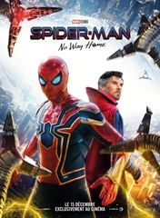

Calendrier
CALENDRIER

Spider-Man: No Way Home
Pour la première fois dans son histoire cinématographique, Spider-Man, le héros sympa du quartier est démasqué et ne peut désormais plus séparer sa vie normale de ses lourdes responsabilités de super-héros. Quand il demande
de l'aide à Doctor Strange, les enjeux deviennent encore plus dangereux, le forçant à découvrir ce qu'être Spider-Man signifie véritablement.
 2h29
2h29 Mardi 18 janvier 2022 : 14h00, 17h00, 20h30

Matrix Resurrections
MATRIX RESURRECTIONS nous replonge dans deux réalités parallèles – celle de notre quotidien et celle du monde qui s'y dissimule. Pour savoir avec certitude si sa réalité propre est une construction physique ou mentale, et pour
véritablement se connaître lui-même, M. Anderson devra de nouveau suivre le lapin blanc. Et si Thomas... Neo... a bien appris quelque chose, c'est qu'une telle décision, quoique illusoire, est la seule manière de s'extraire
de la Matrice – ou d'y entrer... Bien entendu, Neo sait déjà ce qui lui reste à faire. Ce qu'il ignore en revanche, c'est que la Matrice est plus puissante, plus sécurisée et plus redoutable que jamais. Comme un air de
déjà vu...
 2h28
2h28 Mardi 18 janvier 2022 : 15h00, 18h00, 21h00

Adieu monsieur haffmann
Paris 1941. François Mercier est un homme ordinaire qui n'aspire qu'à fonder une famille avec la femme qu'il aime, Blanche. Il est aussi l'employé d'un joaillier talentueux, M. Haffmann. Mais face à l'occupation allemande,
les deux hommes n'auront d'autre choix que de conclure un accord dont les conséquences, au fil des mois, bouleverseront le destin de nos trois personnages.
Mercredi 19 janvier 2022 : 16h30, 19h, 21h45

SCREAM
Vingt-cinq ans après que la paisible ville de Woodsboro a été frappée par une série de meurtres violents, un nouveau tueur revêt le masque de Ghostface et prend pour cible un groupe d'adolescents. Il est déterminé à faire ressurgir
les sombres secrets du passé.
Jeudi 19 janvier 2022 : 16h30, 19h, 22h

355
Une arme technologique capable de prendre le contrôle de réseaux informatiques tombe entre de mauvaises mains. Les agences de renseignements du monde entier envoient leurs agentes les plus redoutables là où l'arme destructrice
a été localisée : à Paris. Leur mission : empêcher des organisations terroristes ou gouvernementales de s'en emparer pour déclencher un conflit mondial. Les espionnes vont devoir choisir entre se combattre ou s'allier…
Samedi 21 janvier 2022 : 10h, 14h, 22h15